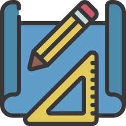

Kauê Matheus
Desenvolvedor Front end

Sobre mim
Sou um Desenvolvedor Web apaixonado por explorar os detalhes do HTML, CSS e JavaScript. Desde criança, sempre fui curioso sobre como as coisas funcionam e essa curiosidade me levou ao mundo da programação. Minha jornada até aqui foi repleta de desafios, mas cada obstáculo que enfrentei apenas alimentou minha determinação em aprender e crescer. No momento, estou mergulhado no estudo de tecnologias avançadas, como React e TypeScript, buscando ampliar ainda mais meu conjunto de habilidades. Acredito que cada desafio é uma oportunidade de aprendizado, e estou comprometido em transformar essas experiências em soluções inovadoras. Estou ansioso para contribuir com minha paixão pela tecnologia e minha capacidade de aprender rápido em projetos futuros.
Projetos 
atenção! passe o mouse por cima do projeto para se redirecionar
Habilidades
HTML
Chamada de "Hypertext Markup Language", é a linguagem que define a estrutura e o conteúdo de uma página web. Permite organizar informações e tornar o conteúdo acessível na web.

CSS
Chamada de "Cascading Style Sheets", linguagem que usamos para estilizar nossas páginas web. Com ele, podemos definir cores, fontes, tamanhos e layout, garantindo que nosso site tenha uma aparência atraente.

Java Script
Linguagem de programação que traz vida às nossas páginas web. Com ele, podemos adicionar interatividade, criar animações e responder a ações do usuário, tornando nosso site dinâmico e envolvente.

Git/GitHub
Git é uma ferramenta que usamos para controlar versões do nosso código, rastreando alterações ao longo do tempo. GitHub é uma plataforma online onde podemos hospedar nosso código Git, colaborar com outros desenvolvedores e gerenciar projetos de software de forma eficiente.

React
Framework JavaScript popular para a criação de interfaces de usuário reativas e componentizadas. Ele nos ajuda a dividir nosso aplicativo em componentes reutilizáveis e atualizar a interface de forma eficiente quando os dados mudam. É amplamente usado para o desenvolvimento de aplicativos web modernos e dinâmicos.